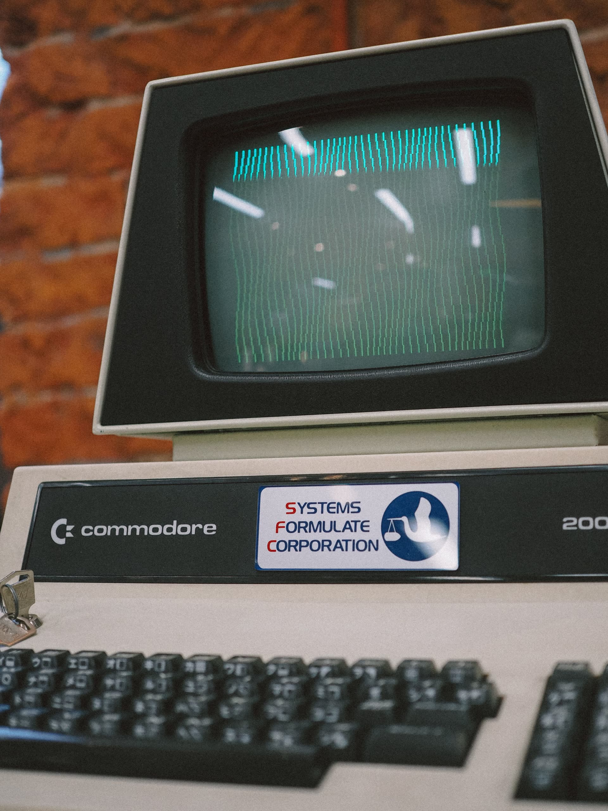

SYSTÈME D'ARCHIVES — CHRONOLOGIE IA
CHAPITRE 1
L’idée que presque tout le monde avait abandonnée
1950
1960
1970
1980
1990
2000
2010
2020
CHAPITRE 1 / 6
L’intelligence artificielle
va changer le monde
Édition spéciale — Sciences · Source : archives
Impasse
L’IA aujourd’hui
Source : archives
Financement refusé
Archives de recherche
Source : archives
Infrastructure de recherche
Source : archives
Université de Toronto
Source : archives
PLUSIEURS DÉCENNIES
AVANT CHATGPT
DU TEMPS
TOUT BASCULE
ANNÉES 1970 · UNIVERSITÉ DE TORONTO
SUJET DE RECHERCHE
Geoffrey Hinton
Royaume-Uni → Université de Toronto
Années 1970
Source : archives
NIVEAU D’ATTENTES
ATTENTES
TEMPS
LES HIVERS DE L’INTELLIGENCE ARTIFICIELLE
Source : illustration
RÉSEAU NEURONAL
ENTRÉE
CACHÉE
SORTIE
on ajuste les connexions à chaque erreur
cible : chat ✓
Source : illustration
TORONTO · MONTRÉAL · EDMONTON
Edmonton
Montréal
Toronto
Source : illustration
🌱
une idée impopulaire
Source : illustration
2004
CIFAR
Geoffrey Hinton
Yoshua Bengio
Yann LeCun
Source : illustration
AUTOMATHING